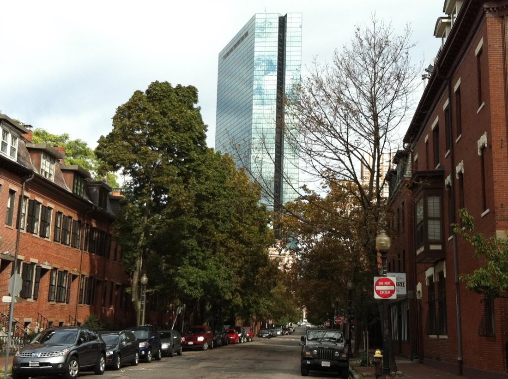
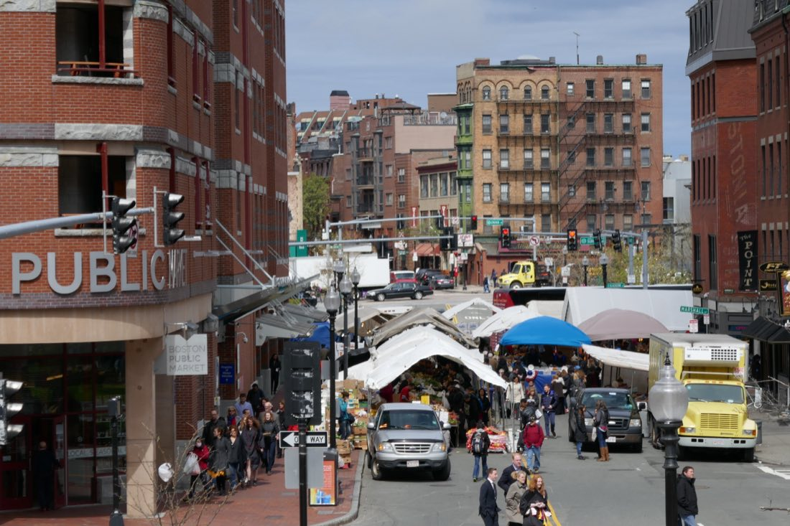
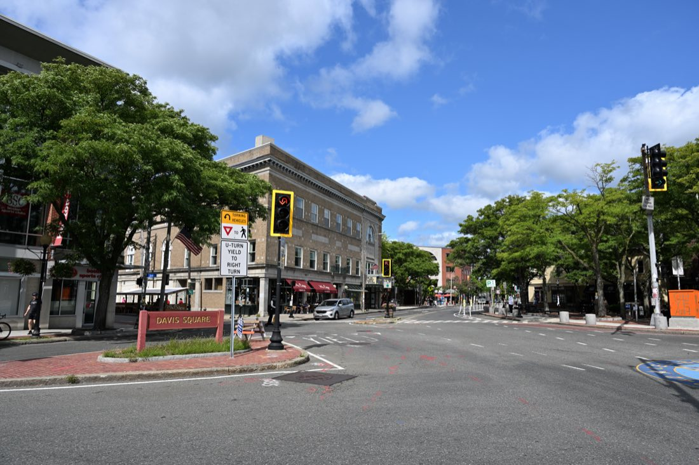

Boston has a funny relationship with coffee. Dunkin' started in Quincy, ten minutes down the Red Line. George Howell started here too, and his Coffee Connection was one of the first places in America to sell single-origin beans. Somewhere between those two you get Hanover Street espresso bars that haven't changed since the 1930s and a crop of young roasters in Cambridge and Somerville.
We've sat in every one of these, some of them for whole afternoons on deadline. We'll tell you which ones are for staying and which are for a quick shot at the counter.
Most open early and close mid-afternoon. A cappuccino costs $4.50 to $6, a bit less in the North End.
The short answer
Short on time? Start with these 8
01 · Downtown
Downtown & the Leather District
The serious coffee is here. Three of the best espresso bars in the city are ten minutes apart, right off the Common.
George Howell Coffee
A long marble bar run by the man who brought single-origin coffee to Boston. Staff will talk you through a pour-over for as long as you want. Order a filter from the reserve list. Open early to late afternoon.
Gracenote Coffee
A closet-sized espresso bar that a lot of Boston coffee people will tell you is the best in town. Light roasts, pulled with care. Order espresso or a cortado. Weekdays, mornings to mid-afternoon.
Ogawa Coffee
A Kyoto roaster's first cafe outside Japan. Blond wood, tiered seating over the bar and very good latte art. Order a latte. Weekdays from early; weekends vary.
Thinking Cup
A great cappuccino across from the Common. Narrow, dark wood, always full. Order a cappuccino and a pastry. Daily, early to evening.
First time in the city? Downtown is usually where a trip starts. Our guide for first-timers in Boston covers what to do with the rest of the day once you've had your coffee. See also the Freedom Trail guide and free things to do.
02 · Back Bay & Beacon Hill
Back Bay & Beacon Hill
Bigger rooms, comfier chairs. Good for an hour off your feet after Newbury or Charles Street.

Tatte Bakery & Café
Boston argues about Tatte. We think the food is good and the Charles Street room is the prettiest one they have. Order shakshuka or a pistachio croissant. Daily, early to early evening.
Pavement Coffeehouse
Where Boston goes to sit with a laptop for three hours. Long tables, plenty of outlets, very good bagels. Order an egg and cheese on a house bagel. Daily, early to evening.
Blue Bottle Coffee
White walls, a short menu and no Wi-Fi on purpose. A calm basement halfway down Newbury. Order the New Orleans iced coffee. Daily, morning to late afternoon.
Blackbird Doughnuts
A doughnut counter, not somewhere to sit. The brioche doughnuts are the best in Boston and the coffee holds up. Order the Bismarck. Morning until sold out.
Newbury Street, the Common and Beacon Hill are all walkable from any of these. Our Boston weekend itinerary builds a full day around this stretch of the city. See also the Beacon Hill guide and best brunch.
03 · South End
South End & Fort Point
Boston's best cafe neighborhood. Brownstone streets and three cafes that would top the list in most cities.

Render Coffee
A bright room, a back patio most people miss, and staff who remember your order. Order a breakfast sandwich and a guest espresso. Daily, early to late afternoon.
Flour Bakery + Café
Joanne Chang's sticky bun is famous, and it's as good as people say. The Fort Point branch is handy for the Seaport. Order the sticky bun, warm. Daily, early to early evening.
Jaho Coffee & Wine Bar
The biggest cafe in the South End and one of the few open late. Coffee in the day, wine at night. Order nitro cold brew, then wine. Daily, morning to late evening.
Cafe-hop your way through the South End and it starts to feel like a scavenger hunt. Our Boston city game turns an afternoon like that into an actual challenge. See also the Seaport guide and best brunch.
04 · North End
The North End
Old-school Italian espresso bars, some open since before the Depression. Go for the room as much as the coffee.

Caffè Vittoria
Open since 1929, with tin ceilings and antique espresso machines. The best dessert stop after dinner on Hanover. Order a cappuccino and cannoli. Daily, morning to late night.
Polcari's Coffee
A coffee and spice shop on the same corner since 1932. Sacks of beans, jars of spices. Very few shops like it are left. Order a pound of house espresso. Mon–Sat, daytime.
The North End is usually the first stop on any Boston trip, coffee included. See where it fits in our 3-day Boston itinerary. See also the North End guide and cheap eats.
05 · Cambridge
Cambridge
More cafes per block than anywhere in Greater Boston, most of them full of grad students. These three are worth crossing the river for.

Broadsheet Coffee Roasters
Our favorite all-round coffee shop in Cambridge. A big, bright roastery with long tables, and nobody minds laptops. Order espresso and the breakfast sandwich. Daily, early to afternoon.
1369 Coffee House
Central Square's coffee house since 1993, with mismatched chairs and a bulletin board buried in flyers. It hasn't really changed. Order iced coffee and a scone. Daily, early to evening.
Curio Coffee
Tiny. Rotating coffee from small roasters and Belgian waffles made to order. Order a Liège waffle and a cortado. Mornings to early afternoon.
Long tables and Wi-Fi that doesn't quit make Cambridge's cafes some of the best solo work spots in the city. More on that in our Boston solo travel guide. See also the Harvard Square guide.
06 · Somerville
Somerville: Davis & Porter
Up the Red Line, where cafes stay open after dark and nobody minds if you stay all afternoon.

Diesel Café
The living room of Davis Square since 1999, pool tables in the back. The easiest place in Greater Boston to open a laptop. Order a latte and a game of pool. Daily, early to evening.
Forge Baking Company
The bakery-roastery behind Diesel. A strong pastry case, and an ice cream bar next door for the evening. Order a morning bun. Daily, early to evening.
Diesel and Forge both make it onto our Boston bucket list of things every local ends up doing at least once. See also bars to meet people.
Open late
Coffee after 6pm
Most Boston cafes close by mid-afternoon. These four don't.
FAQ
Boston cafes: common questions
What is the best cafe in Boston?
For coffee alone, George Howell at the Godfrey Hotel downtown. For food, room and all of it together, Tatte on Charles Street in Beacon Hill.
Which Boston cafes are best for working on a laptop?
Diesel in Davis Square, Broadsheet in Cambridge, Render in the South End, Pavement on Boylston and 1369 in Central Square. Skip Blue Bottle, Gracenote and Vittoria for this.
Where is the best espresso in Boston?
Gracenote on Lincoln Street, then George Howell. For a classic Italian shot, Caffè Vittoria on Hanover.
Does the North End have good coffee shops?
Yes, in the Italian style: espresso, cappuccino and pastry. For pour-over, walk to George Howell downtown.
Which cafes stay open latest?
Most close between 4 and 6pm. Jaho, Vittoria, Diesel and Forge stay open into the evening. Hours change with the seasons, so check first.
Are Boston cafes cash only?
Nearly all take cards. Vittoria and Polcari's in the North End still prefer cash.